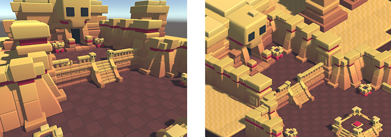

Cameras
A Unity scene is created by arranging and moving objects in a three-dimensional space. Since the viewer's screen is two-dimensional, there needs to be a way to capture a view and "flatten" it for display. This is accomplished using Cameras.
A camera is an object that defines a view in scene space. The object's position defines the viewpoint, while the forward (Z) and upward (Y) axes of the object define the view direction and the top of the screen, respectively. The Camera component also defines the size and shape of the region that falls within the view. With these parameters set up, the camera can display what it currently "sees" to the screen. As the camera object moves and rotates, the displayed view will also move and rotate accordingly.
Perspective and orthographic cameras

A camera in the real world, or indeed a human eye, sees the world in a way that makes objects look smaller the farther they are from the point of view. This well-known perspective effect is widely used in art and computer graphics and is important for creating a realistic scene. Naturally, Unity supports perspective cameras, but for some purposes, you want to render the view without this effect. For example, you might want to create a map or information display that is not supposed to appear exactly like a real-world object. A camera that does not diminish the size of objects with distance is referred to as orthographic and Unity cameras also have an option for this. The perspective and orthographic modes of viewing a scene are known as camera projections. (scene above from BITGEM)
The shape of the viewed region
Both perspective and orthographic cameras have a limit on how far they can "see" from their current position. The limit is defined by a plane that is perpendicular to the camera's forward (Z) direction. This is known as the far clipping plane since objects at a greater distance from the camera are "clipped" (ie, excluded from rendering). There is also a corresponding near clipping plane close to the camera - the viewable range of distance is that between the two planes.
Without perspective, objects appear the same size regardless of their distance. This means that the viewing volume of an orthographic camera is defined by a rectangular box extending between the two clipping planes.
When perspective is used, objects appear to diminish in size as the distance from camera increases. This means that the width and height of the viewable part of the scene grows with increasing distance. The viewing volume of a perspective camera, then, is not a box but a pyramidal shape with the apex at the camera's position and the base at the far clipping plane. The shape is not exactly a pyramid, however, because the top is cut off by the near clipping plane; this kind of truncated pyramid shape is known as a frustum. Since its height is not constant, the frustum is defined by the ratio of its width to its height (known as the aspect ratio) and the angle between the top and bottom at the apex (known as the field of view of FOV). See the page about understanding the view frustum for a more detailed explanation.
The background to the camera view
For indoor scenes, the camera may always be completely inside some object representing the interior of a building, cave or other structure. When the action takes place outdoors, however, there will be many empty areas in between objects that are filled with nothing at all; these background areas typically represent the sky, space or the murky depths of an underwater scene.
A camera can't leave the background completely undecided and so it must fill in the empty space with something. The simplest option is to clear the background to a flat color before rendering the scene on top of it. You can set this color using the camera's Background property, either from the inspector or from a script. A more sophisticated approach that works well with outdoor scenes is to use a Skybox. As its name suggests, a skybox behaves like a "box" lined with images of a sky. The camera is effectively placed at the center of this box and can see the sky from all directions. The camera sees a different area of sky as it rotates but it never moves from the center (so the camera cannot get "closer" to the sky). The skybox is rendered behind all objects in the scene and so it represents a view at infinite distance. The most common usage is to represent the sky in a standard outdoor scene but the box actually surrounds the camera completely, even underneath. This means that you can use a skybox to represent parts of the scene (eg, rolling plains that stretch beyond the horizon) or the all-round view of a scene in space or underwater.
You can add a skybox to a scene simply by setting the Skybox property in the Lighting window (menu: Window > Rendering > Lighting Settings). See this page for further details on how to create your own skybox.